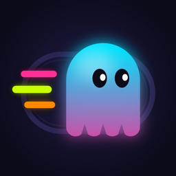

GHOST RACE
Race the ghosts of your own runs — your fastest, your average, your last race — live on a track or a map, on your Apple Watch or just your iPhone.
Get help
Email dannycbg89@gmail.com — say which iPhone (and Watch) you have and what happened. You'll usually hear back within a day.
Email supportCommon questions
Why are there no ghosts?
Ghosts are built from running workouts in Apple Health. Allow Health in Ghost Race › Settings › Permissions, and check the Health app has your runs (from Apple Watch, Garmin or any app). Until then, you can race pace or goal-time ghosts.
My Watch didn't start the race
Unlock your Watch, open Ghost Race on it and tap Outdoor or Treadmill, then try again from your iPhone. Keep the two close together for the first few seconds.
Can I race without a Watch?
Yes — choose “iPhone only”. Outdoors it uses GPS; on a treadmill it counts your steps, so keep the phone on you (a pocket or armband), not on the treadmill. Heart rate can come from a Bluetooth chest strap.
Restoring purchases
Purchases belong to your Apple ID. On a new phone they unlock by themselves; if not, go to Settings › Ghost Race Pro › Restore purchases. Manage or cancel a subscription in your Apple ID settings (Settings › your name › Subscriptions).
Keeping your friends on a new phone
Sign in with Apple in Settings › Account. Your friend code, friends and races then come back when you sign in on another iPhone.
Reporting or blocking someone
Press and hold their name, ghost, route, run or cheer and choose Report or Block. Reports are reviewed within 24 hours. You can unblock people in Settings › Account › Blocked people.
Deleting your account
Settings › Account › Delete account removes your account and everything on Ghost Race's server straight away. Races on your iPhone and in Apple Health stay yours.